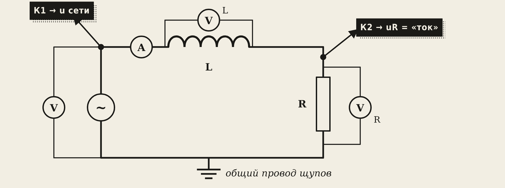
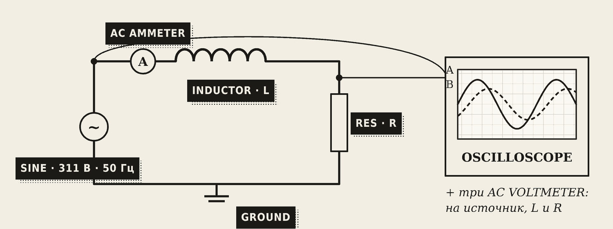
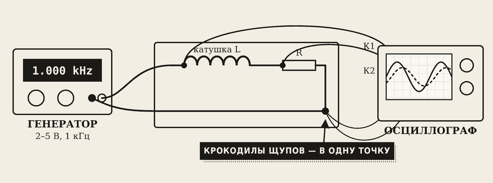
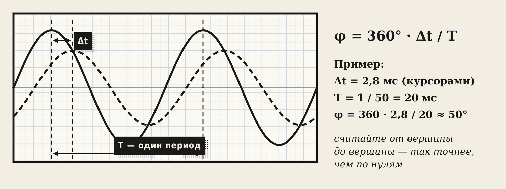
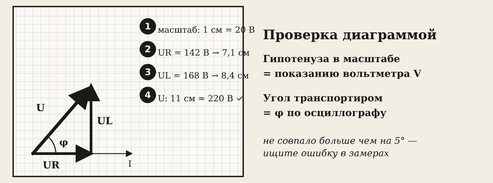

1. Цель и варианты
Цель: на опыте проверить, что в цепи с резистором и катушкой сопротивления и напряжения складываются «под прямым углом», а ток отстаёт от напряжения на угол φ.
Вариант — номер в журнале N:
R = 20 + 2·N, Ом L = 0,05 + 0,01·N, Гн
Например, N = 10: R = 40 Ом, L = 0,15 Гн. Сеть: U = 220 В, f = 50 Гц.
Работу можно выполнить тремя способами — данные и расчёт одинаковые:
- А — Proteus на компьютере;
- Б — вживую на стенде с генератором и осциллографом (под присмотром преподавателя);
- В — лаборатория в браузере на телефоне.
2. Схема

- Амперметр — последовательно, в разрыв цепи.
- Три вольтметра — параллельно: на источник (U), на катушку (UL) и на резистор (UR).
- Осциллограф: канал K1 — напряжение сети, канал K2 — напряжение на резисторе.
Запомните
Зачем канал K2 на резисторе? Осциллограф показывает только напряжение. Но на резисторе напряжение совпадает с током «в ногу», значит волна UR — это форма тока. Так мы видим сдвиг между током и напряжением.

В Proteus: генератор SINE — Amplitude 311 (это амплитуда, действующее 220 В), Frequency 50. Элементы RES и INDUCTOR — ваши R и L (дробь через точку: 0.15H). Приборы — AC AMMETER и AC VOLTMETER, не DC!

Вживую вместо сети берут безопасный генератор (2–5 В, около 1 кГц). Общие провода («крокодилы») обоих щупов осциллографа подключают в одну точку.
3. Три опыта
| Опыт | Что делаем | Что ожидать |
|---|---|---|
| 1 · только R | катушку замыкаем перемычкой | сдвига нет, Δt = 0 |
| 2 · R + L, 50 Гц | обычная схема | ток отстаёт, Δt ≈ 2–3 мс |
| 3 · R + L, 100 Гц | частоту увеличили вдвое | XL вдвое больше, ток меньше, угол больше |
В каждом опыте записывают: f, U, I, UR, UL, Δt и T.
4. Как измерить сдвиг фаз

- Найдите на экране вершину волны напряжения и ближайшую следующую вершину волны тока.
- Поставьте курсоры на обе вершины — прибор покажет Δt (время опоздания).
- Измерьте период T (при 50 Гц — 20 мс).
- Посчитайте угол:
φ = 360° · Δt / T
Посмотрите, как меняется Δt в трёх опытах:
5. Расчёт — образец для варианта 10
Измерено: U = 220 В, I = 3,56 А, UR = 142 В, UL = 168 В, Δt = 2,76 мс, T = 20 мс.
Сопротивления и угол - Z = U / I = 220 / 3,56 = 61,8 Ом - XL = UL / I = 168 / 3,56 = 47,2 Ом - L = XL / (2π·f) = 47,2 / 314 = 0,150 Гн — совпало с вариантом - cos φ = UR / U = 142 / 220 = 0,646 → φ ≈ 50° - по осциллографу: φ = 360 · 2,76 / 20 ≈ 50° — совпало
Мощности - P = UR · I = 142 · 3,56 ≈ 506 Вт - Q = UL · I = 168 · 3,56 ≈ 598 вар - S = U · I = 220 · 3,56 ≈ 783 В·А - проверка: √(506² + 598²) ≈ 783 — совпало

Векторная диаграмма в отчёте: выберите масштаб (например 1 см = 20 В), отложите UR вправо вдоль тока, из его конца — UL вверх. Гипотенуза должна совпасть с U по длине, а угол — с φ по осциллографу. Расхождение больше 5° — ищите ошибку в замерах.
6. Выводы — шаблон
- Полное сопротивление Z = … Ом, по формуле √(R² + XL²) = … Ом — совпадает / не совпадает, потому что …
- В цепи R–L ток отстаёт от напряжения на φ = …° (по осциллографу) и …° (по cos φ).
- При увеличении частоты вдвое XL …, ток …, угол φ …
- Сумма UR + UL = … В больше U = … В, потому что напряжения сдвинуты на 90° и складываются как катеты.
7. Типичные ошибки
- В Proteus приборы DC вместо AC — показывают ноль или чушь.
- Amplitude поставили 220 — тогда действующее всего 156 В.
- Вольтметр включили последовательно, а амперметр параллельно.
- Осциллограф: крокодилы двух щупов в разных точках — короткое замыкание через землю прибора.
- Сложили UR + UL и удивились, что не 220 — это не ошибка, а главный вывод работы.
Словарик
- Δt — время, на которое волна тока опаздывает от волны напряжения.
- Период T — время одной волны; при 50 Гц — 20 мс.
- Сдвиг фаз φ — то же опоздание в градусах: φ = 360° · Δt / T.
- Осциллограф — прибор, который рисует форму напряжения на экране.
- Курсоры — подвижные линии на экране осциллографа для точного отсчёта времени.
- Масштаб диаграммы — сколько вольт в одном сантиметре.
Эталоны в тетрадь
Перепишите в тетрадь по билетам — каждый эталон на отдельную страницу, с рисунком и строкой «Мой пример».
R, L и C в цепи переменного тока
Резистор, катушка и конденсатор в цепи переменного тока: активное, индуктивное и ёмкостное сопротивления, сдвиг фаз.
- Резистор (R) — активное сопротивление. Ток и напряжение идут «в ногу» (без сдвига). Энергия уходит в тепло: ТЭН, чайник.
- Катушка (L) — индуктивное сопротивление XL = 2π·f·L. Растёт с частотой. Ток отстаёт от напряжения на 90°.
- Конденсатор (C) — ёмкостное сопротивление XC = 1 / (2π·f·C). Падает с ростом частоты; постоянный ток не пропускает. Ток опережает напряжение на 90°.
- В сварке: дроссель (катушка) ограничивает переменный ток без нагрева, за счёт XL.
Цепь с R и L, треугольник сопротивлений
Неразветвлённая цепь с R и L (RLC): полное сопротивление, треугольник сопротивлений, векторная диаграмма.
- Резистор и катушка включены последовательно. Их сопротивления нельзя просто сложить — они складываются «под прямым углом».
- Полное сопротивление: Z = √(R² + XL²). Если есть и конденсатор: Z = √(R² + (XL – XC)²).
- Треугольник сопротивлений: катеты R и XL, гипотенуза Z. Пример: R = 30 Ом, XL = 40 Ом → Z = 50 Ом (египетский треугольник 3–4–5). (Нарисуйте.)
- Закон Ома: I = U / Z. Коэффициент мощности: cos φ = R / Z.
- Векторная диаграмма: UR — вдоль тока, UL — вверх под 90°, U — их сумма (гипотенуза). Поэтому вольтметры покажут UR + UL больше, чем U.
Активная, реактивная и полная мощность
Активная, реактивная и полная мощность. Коэффициент мощности cos φ и способы его повышения.
- Активная P = U·I·cos φ, [Вт] — полезная мощность (тепло, работа двигателя).
- Реактивная Q = U·I·sin φ, [вар] — «гуляет» между сетью и катушками, работы не совершает, но греет провода.
- Полная S = U·I, [В·А]; S² = P² + Q². В кВ·А указывают мощность трансформаторов и сварочных аппаратов.
- Аналогия: кружка кваса с пеной. Квас — активная мощность, пена — реактивная, вся кружка — полная.
- cos φ = P / S — какая доля мощности полезная. Низкий cos φ = лишний ток. Повышают: конденсаторные установки, не держать двигатели и сварочные трансформаторы на холостом ходу.
Проверь себя
Сначала ответьте сами — в тетради или вслух. Потом нажмите на вопрос, чтобы увидеть ответ.
1Зачем второй канал осциллографа подключают к резистору?
На резисторе напряжение совпадает с током по фазе, поэтому эта волна показывает форму тока.
2Δt = 5 мс, T = 20 мс. Найдите угол сдвига.
φ = 360 · 5 / 20 = 90°.
3Как изменятся XL и ток, если частоту увеличить с 50 до 100 Гц?
XL вырастет вдвое, Z вырастет, ток уменьшится, угол φ увеличится.
4Почему UR + UL больше U?
Напряжения сдвинуты на 90° и складываются как катеты прямоугольного треугольника, а не как числа.
5U = 220 В, I = 2 А, UR = 132 В. Найдите Z и cos φ.
Z = 110 Ом; cos φ = 132 / 220 = 0,6.
6Какой прибор включают в разрыв цепи, а какой — параллельно?
Амперметр — в разрыв (последовательно), вольтметр — параллельно.
7Что будет в опыте 1, если катушку замкнуть перемычкой?
Останется только резистор: сдвига нет, ток и напряжение «в ногу».
Попробуйте в лаборатории
Откройте на телефоне или компьютере — ничего устанавливать не нужно.
Ответы к «Проверь себя»
- На резисторе напряжение совпадает с током по фазе, поэтому эта волна показывает форму тока.
- φ = 360 · 5 / 20 = 90°.
- XL вырастет вдвое, Z вырастет, ток уменьшится, угол φ увеличится.
- Напряжения сдвинуты на 90° и складываются как катеты прямоугольного треугольника, а не как числа.
- Z = 110 Ом; cos φ = 132 / 220 = 0,6.
- Амперметр — в разрыв (последовательно), вольтметр — параллельно.
- Останется только резистор: сдвига нет, ток и напряжение «в ногу».